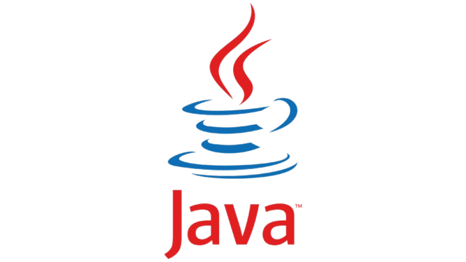

Rin Ishikawa
Développeuse WEB
(Backend)
Rin Ishikawa, 24 ans, est une développeuse back-end originaire d’Osaka, Japon. Passionnée par l’ingénierie logicielle et l’architecture des systèmes, elle découvre très tôt un intérêt marqué pour la programmation et les environnements techniques exigeants. À 18 ans, elle choisit de s’installer en France afin de poursuivre une formation spécialisée en développement informatique. Durant son cursus, elle se concentre particulièrement sur le développement back-end et acquiert des compétences solides en conception d’API, gestion de bases de données et optimisation de performances serveur. Elle participe également à plusieurs projets encadrés, lui permettant d’appliquer ses connaissances dans des contextes concrets et collaboratifs. Aujourd’hui, Rin exerce en tant que développeuse back-end junior, avec une expertise centrée sur JAVA, Python et les architectures REST. Attentive aux bonnes pratiques, elle s’intéresse également aux environnements cloud, à la sécurité des applications et aux méthodes de développement modernes. Rigoureuse, curieuse et orientée solution, Rin accorde une grande importance à la qualité du code et à la performance des systèmes qu’elle conçoit. En dehors de son activité professionnelle, elle pratique la calligraphie japonaise et les jeux de logique, disciplines qui nourrissent sa précision et son sens du détail.
Mes languages utilisés
- 
-